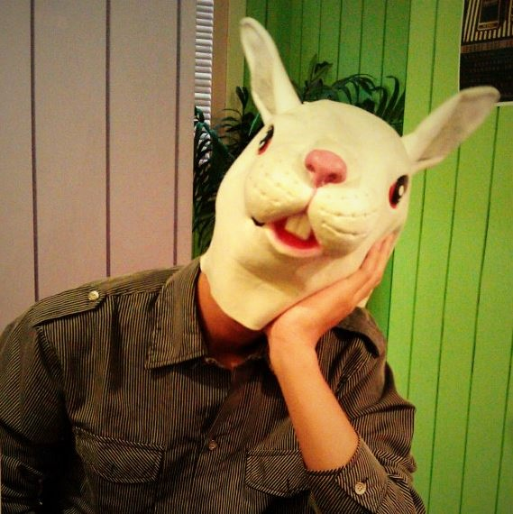

|
Hung-Jin Lin
I am an engineer at Mediatek, where
I work on computer vision and machine learning.
At Mediatek, I work on mobile computational photography with deep learning. And, my research is in
the field of image restoration and enhancement, camera pose estimation with machine learning.
Email /
LinkedIn /
Github
|

|
Real-Time Single-Stage Vehicle Detector Optimized by Multi-Stage Image-Based Online Hard Example Mining
Che-Tsung Lin, Shu-Ping Chen, Patrisia Sherryl Santoso, Hung-Jin Lin, Shang-Hong Lai
IEEE Trans. Veh. Technol., 2020
|
Explorable Tone Mapping Operators
Chien-Chuan Su, Ren Wang, Hung-Jin Lin, Yu-Lun Liu, Chia-Ping Chen, Yu-Lin Chang, Soo-Chang Pei
ICPR, 2020
|
Learning Camera-Aware Noise Models
Ke-Chi Chang, Ren Wang, Hung-Jin Lin, Yu-Lun Liu, Chia-Ping Chen, Yu-Lin Chang, Hwann-Tzong Chen
ECCV, 2020
|
DeepRoom: 3D Room Layout and Pose Estimation from a Single Image
Hung-Jin Lin, Shang-Hong Lai
ACPR, 2019
|
Indoor Scene Layout Estimation from a Single Image
Hung-Jin Lin, Sheng-Wei Huang, Shang-Hong Lai, Chen-Kuo Chiang
ICPR, 2018
|
General Deep Image Completion with Lightweight Conditional Generative Adversarial
Networks
Ching Wei Tseng, Hung-Jin Lin, Shang-Hong Lai
BMVC, 2017
|
Fast Vehicle Detector for Autonomous Driving
Che-Tsung Lin, Patrisia Sherryl Santoso, Shu-Ping Chen, Hung-Jin Lin, Shang-Hong Lai
ICCV Workshops, 2017
|
|
{kind=link}